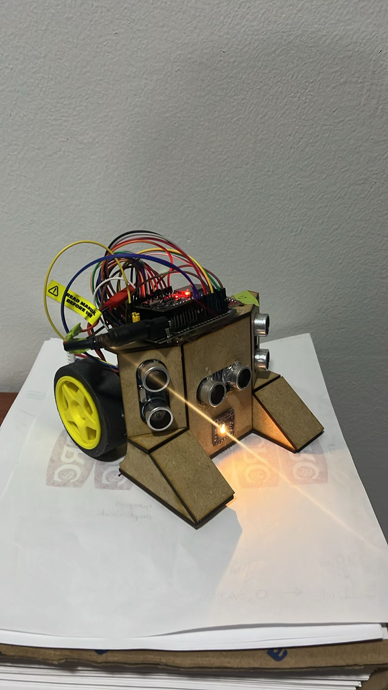
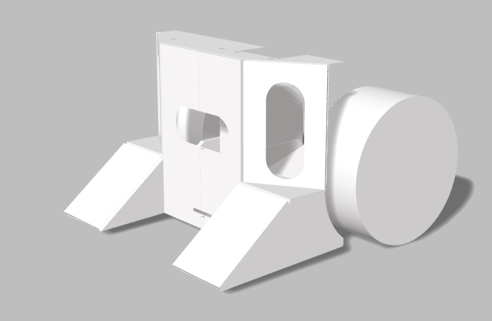

🤖 El sistema físico


📋 Descripción general
Este proyecto implementa un sistema de percepción inteligente completo para robots de fútbol en un entorno RoboCup Small Size League (SSL). El campo mide 180×90 cm y los robots deben tomar decisiones en ciclos menores a 100 ms. Cada robot cumple un rol específico: Jugador (atacante) o Portero (defensor), coordinándose en tiempo real.
La arquitectura combina tres capas de inteligencia: una Red Neuronal MLP para clasificar el entorno, Algoritmos Genéticos (GA) que evolucionan parámetros estratégicos a ~1 Hz, y PSO (Particle Swarm Optimization) que optimiza trayectorias locales a 10–20 Hz. Esta combinación supera las limitaciones de las reglas fijas ante condiciones dinámicas e incertidumbre del campo.
🧠 Arquitectura de IA — Sistema híbrido
- 9 entradas: distancias + variaciones + color RGB
- 12 neuronas ocultas (activación Sigmoid)
- 4 salidas (Softmax): Pared / Oponente / Balón libre / Balón disputado
- Entrenada con 2841 muestras — 96.13% precisión
- Optimización de trayectorias locales en tiempo real
- Ecuación de velocidad: v = w·v + c₁·r₁·(pBest−x) + c₂·r₂·(gBest−x)
- w=0.7 · c₁=1.5 · c₂=1.5
- Evoluciona parámetros globales: genes[g1, g2, g3]
- Fitness = goles marcados + distancia al objetivo + detecciones de color
- Mutación aleatoria cada 10 ciclos sobre genes[0..2]
🔄 Máquinas de estados (FSM)
PSO guía exploración — giros adaptativos
Avanza hacia el balón — velocidad ajustada por genes[2]
Balón disputado — máxima potencia frontal
Pared detectada — retroceso + giro + vuelta a BUSCAR
Estado base — escucha ESP-NOW del jugador
Giro suave (≤150ms) hacia la dirección del jugador
Amenaza alta (Perceptrón de peligro) — se interpone en trayectoria
Balón <15cm — avance + retroceso a posición base
📡 Comunicación ESP-NOW entre robots
Los dos robots se comunican inalámbricamente vía ESP-NOW (protocolo peer-to-peer de Espressif sobre WiFi, sin router). El jugador envía su estado cada ciclo al portero con tres datos: dirección del objeto detectado, estado actual de la FSM y distancia central.
{dirección, estado, distCentro}🔬 Red neuronal — Detalles técnicos
- d_izq · d_cent · d_der (distancias cm)
- var_i · var_c · var_d (variación entre lecturas)
- colorR · colorG · colorB (sensor TCS34725 raw)
- Normalización min-max antes de pasar
- Activación:
sigmoid(z) - Pesos W1[9][12] + BIAS1[12]
- 0 — Pared
- 1 — Oponente
- 2 — Balón libre
- 3 — Balón disputado
⚡ Hardware del sistema
💻 Archivos del firmware
- FSM: BUSCAR / ATACAR / PELEAR / EVITAR
- Envía {dirección, estado, distCentro} al portero cada ciclo
- PWM ajustado por genes[2]: vel = 180 + genes[2]×75
- FSM: QUIETO / ORIENTAR / BLOQUEAR / DESPEJAR
- Perceptrón de peligro: 5 entradas → amenaza → umbral genes[0]
- Perceptrón de alineación: di_n, dd_n, dir_jugador → girar izq/der
- Imprime clase, confianza y probabilidades de las 4 clases en tiempo real
- Útil para validar sensores y calibrar umbrales antes de integrar
- Mismo MLP embebido en C++ (pesos hardcodeados en flash del ESP32)